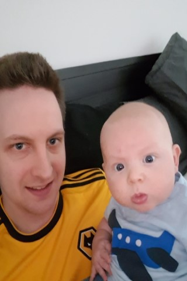
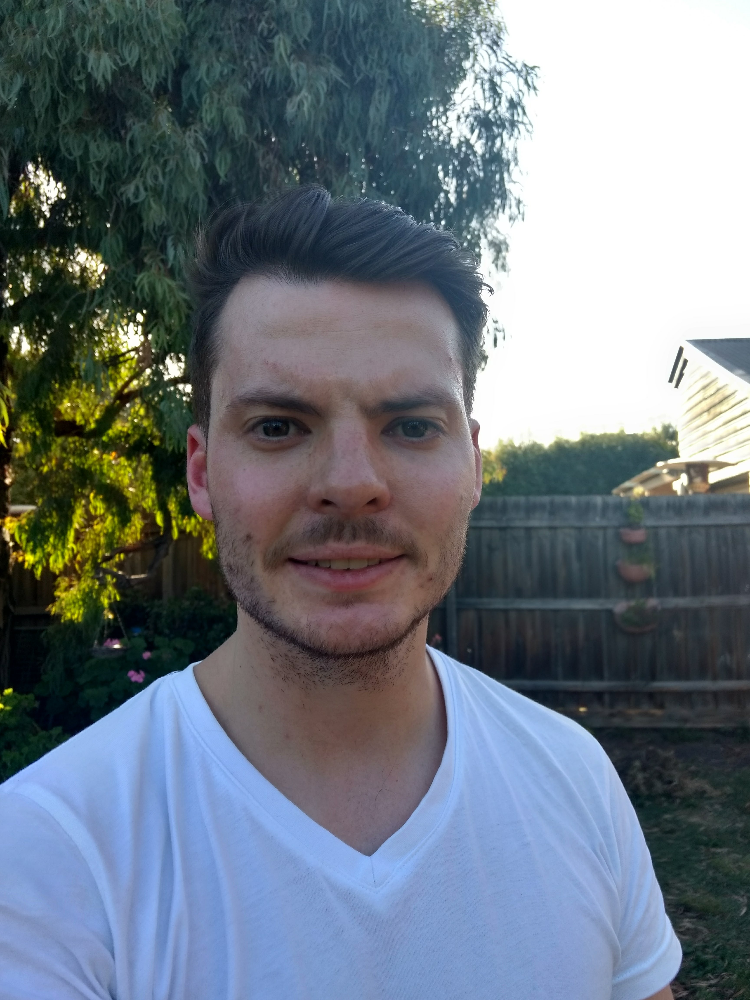

Arin Edwards

Arin was born in in the Western Suburbs of Melbourne and has lived there all this life. Arin has a passion for computers and anything I.T related ever since he was young.
Getting his first playstation with his family and playing with his brothers and sister made him wonder how technology evolves overtime. Looking at the technology in computers and how you could build one from all different parts, Arin decided to build his own and still upgrades it to this very day. Always looking at the constant evolving and revolutinary technology in the world sparked Arin's interest to finally go further into studying a Bachelor of Information technology.
Dylan (omitted)
Dylan was born in East Gippsland, Victoria, where he lived until age 12. Dylan currenly lives on the Eyre Peninsula in South Australia. Dylan has two years of IT work experience, having worked as an IT technician for a government agency. During this time, Dylan completed a Certificiate III in Information, Digitial Media and Technology, along with a Diploma in Leadership and Management. Dylan is now studying with RMIT as an undergraduate student, completing a Bachelor of Information Technology.
Dylan's extensive interest in information technology started at a very young age, having grown up with a father who built computers and created digital games. Throughout his childhood, Dylan was surrounded by family and friends who actively used information technology in unique ways for a variaty of different purposes, nurturing his interest in the area. Dylan began coding himself at age 9, starting with basic batch scripts before moving to C/C++ at around 13. In current times, Dylan is familar with variaty of coding languages; he has coded both websites using HTML and small applications using C, C++ and more recently, java.
Jacob Darling
Jacob was born in Canberra and has been living in Hobart for the past 10 years. Jacob is an avid tech enthusiast who enjoys gaming and military history.
Jacob was introduced to computers at a very young. At this time Jacob started playing PC games. As time went on he releasied how fun computers were and started learning about how these systems work. Jacob learnt areas of computing such as networking and programming and has used technology such as raspberry pies and Adruinos and other IoT products. At college Jacob studied Computer Science which covered things such as Binary, Hexadecimal, Java Programming, "How a Computer works", logic gates and various other things, he enjoyed this subject a lot. Jacob is interested in areas such as software development, networking and IT security.
Joshua Coppen

Josh is a 27-year-old father of two who was born and raised in Adelaide, South Australia. Josh’s parents were both born in England and both arrived at shores of Australia when they were 5 years old. Playing video games and following a multitude of sports are Josh’s favourite hobbies. His favourite sport is Australian rules football and he is a diehard Adelaide Crows supporter.
Ever since Josh was young, he had an avid interest in computers through gaming. In his desire to play World of Warcraft Josh built his first computer. Realising how much fun he had building his first PC with his friends he knew one day he would want to follow a career with computers. Now that he has his family into a sound financial position, Josh Is following his dream by studying a Bachelor of Information technology at RMIT University.
Ryan Bullock

Ryan was born and raised in Melbourne Australia, with his family originating from England and Ireland. Ryan has several years of IT experience, including the completion of an Advanced Diploma of Computer Systems Engineering and many years of previous employment. He began his career as a Level 1 Help Desk Technician, remaining with the employer for over 7 years and progressing to the role of Senior Systems Engineer. Ryan is currently working as a Systems Analyst and has held this job for nearly a year.
Ryan first became interested in IT when his dad bought home a Pentium 2, a machine powerful enough for him to play Abe's Odyssey and The Sims. Overtime Ryan became the 'family computer tech' - troubleshooting internet, computer and printer issues around the home. Ryan's main interests involve networking and servers, including virtualisation and cloud computing. Ryan enjoys modifying PowerShell scripts and building websites.
Seth Underdown
Seth was born in Gladstone Central Queensland and has been moving between cities and states ever since. His passion for IT started when he saw that you could create all sorts of art, games and music on copmuters and the amazing expanse of games you could play on them.
He has completed a few IT related certificates like a Cert I in Information Technology and a Cert III in information and Digital Media Technologies. With the knowledge from these courses, he started collecting old PC's from the Facebook Marketplace and seeing how well he can improve them with PC parts he scrapped from other computers with his friends. Learning to play new music on the piano and guitar and researching random events throughout history that catch his attention are a few of his hobbies.
Techpro's Information Technology Report
Our team has prepared a report covering various technologies and industry data relating to the Information Technology industry. Included in our report is four reports covering the current state of technologies such as Raspberry Pis, clouds, services and servers, cyber security technologies, and autonomous vehicles. Included in our report is a team project idea.
Our full report is available for download here - TechPro's Team Report.PDF